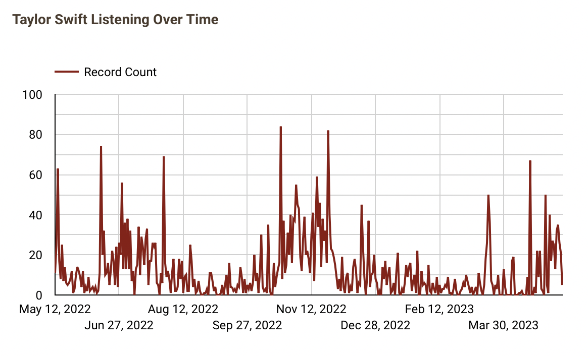

Eras Tour Listening Activity
Overview
In honor of the Eras Tour happening this summer, I analyzed my personal Spotify listening history data to see my own personal Eras Tour listening activity. I made 5 data visualizations where I displayed my Taylor Swift listening over time, Taylor Swift top songs, Gracie Abrams top songs, other quick stats.